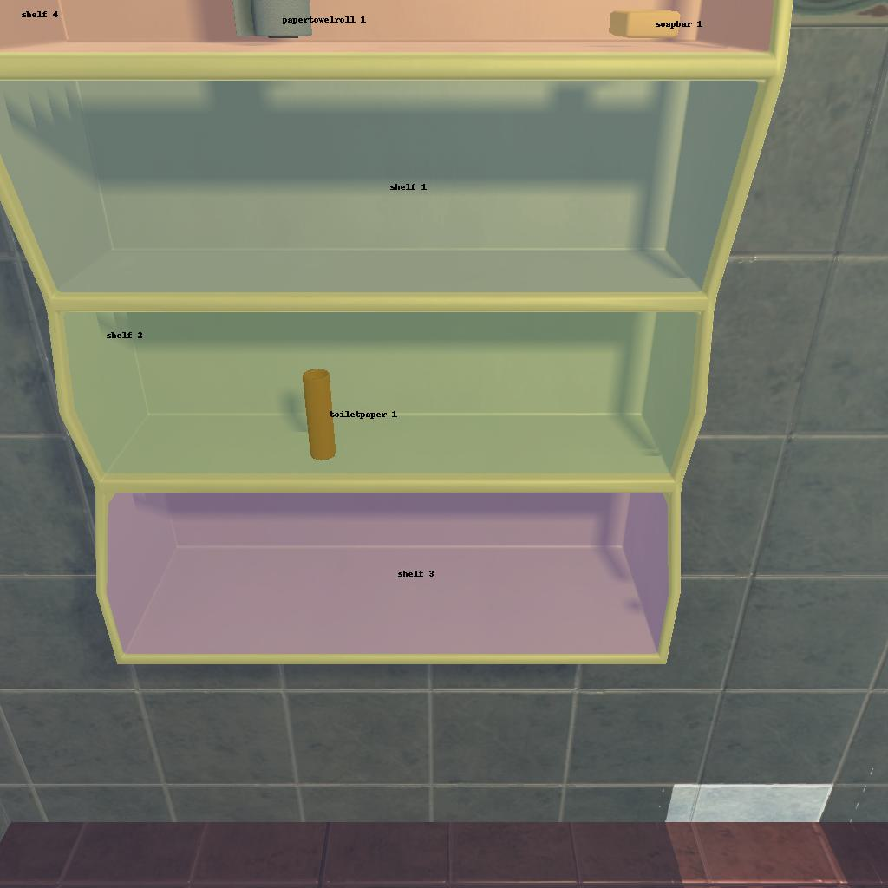

---------------------------------------------------------task: 25---------------------------------------------------------
--------------------------------------------------------------------------------------------------------------------------------------------------------------------
--------------------------------------------------------------------------------------------------------------------------------------------------------------------
Step:--------------------------------------------------------------------------7-------------------------------------------------------------------------------
----------------------------------------
VLM Prompt:
Image1:
Image2:
Image3:
**Instruction**
1. Analyze the provided image to identify all visible household objects, focusing on those relevant to the task description "find two dishsponge and put them in cart."
2. Use the analysis of the image and the task hint "The agent must find an object of the desired type, pick it up, find the correct location to place it, put it down there, then look for another object of the desired type, pick it up, return to previous location, and put it down there with the other object." to answer the question: what is the most reasonable action in the choices for the task description "find two dishsponge and put them in cart"?
4. Decide and write the answer using the template: The answer is: (i): , where i is the real number. If there is no desired object in the image, search every place based on **Initial Observation** to find the object. And if no one is exactly correct, choose a similar answer.
**Initial Observation**
You are in the middle of a room. Looking quickly around you, you can see bathtub (1), bathtubbasin (1), cart (1), toilet (1), garbagecan (1), toiletpaperhanger (1), shelf (1-4), sink (1), sinkbasin (1), handtowelholder (1)
**Answer Choices**
(1): go to bathtub 1
(2): go to bathtubbasin 1
(3): go to toilet 1
(4): go to garbagecan 1
(5): go to toiletpaperhanger 1
(6): go to shelf 2
(7): go to shelf 4
(8): go to sink 1
(9): go to sinkbasin 1
(10): go to handtowelholder 1
(11): take papertowelroll 1 from shelf 3
(12): take toiletpaper 1 from shelf 3
(13): take soapbar 1 from shelf 3
(14): examine shelf 3
**Answer**
Let's think step by step by following the instructions.
----------------------------------------
----------------------------------------
Original Response:
First, we need to identify all visible household objects in the images provided. In Image 1, we see a "cart 1" and a "cloth 1." In Image 2 and Image 3 (which are identical), we see "papertowelroll 1," "toiletpaper 1," and "soapbar 1" on shelf 3 and shelf 4. However, none of these objects are the "dishsponge" we are looking for.
According to the task description, we need to find two dishsponges and put them in the cart. Since no dishsponges are visible in the images, we must search every place based on the Initial Observation to find the object.
Based on the Initial Observation, we have several locations to check for the dishsponge: bathtub, bathtubbasin, toilet, garbagecan, toiletpaperhanger, shelves, sink, sinkbasin, and handtowelholder.
The task hint suggests that we must find an object of the desired type, pick it up, find the correct location to place it, and then put it down there. Since we are looking for a dishsponge, we should check locations where a dishsponge is likely to be found, such as near the sink or on the shelves.
Considering the options provided, the most reasonable action would be to examine the shelf where the dishsponge is most likely to be found. The answer is: (14): examine shelf 3.
----------------------------------------
----------------------------------------
>>> Refine Original VLM Response and Get Pure Action: examine shelf 3
----------------------------------------
-----------------------------------------------------------------
Running time: 12.349336624145508 seconds
Total Money: 16.134480000000003
-----------------------------------------------------------------
-----------------------------------------------------------------
Text Observation:On the shelf 3, you see a papertowelroll 1, a toiletpaper 1, and a soapbar 1.
-----------------------------------------------------------------
UNSUCCEED